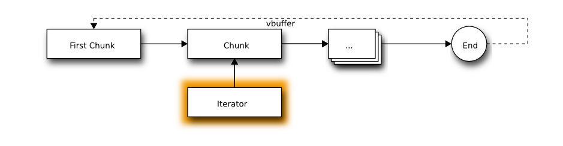
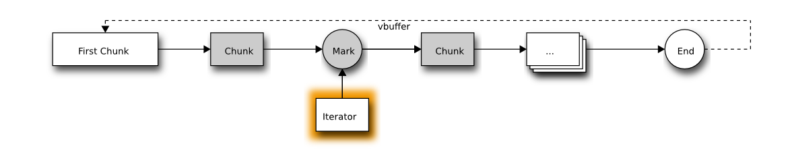
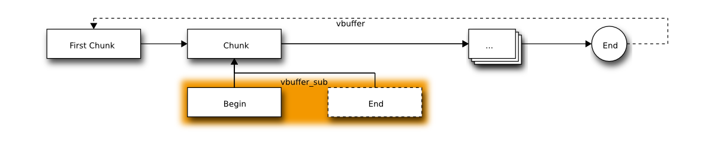

3.12.1. Buffer¶
Virtual buffer abstraction.
DefinesTypedefsALL
Define for vbuffer size.
Enumstypedef uint32 vbsize_t
vbuffer size type.
Functionsclone_mode enum
Clone mode.
Values:
- CLONE_COPY -
Copy the buffer.
- CLONE_RW -
Clone the buffer keeping the writable flag.
- CLONE_RO_ORIG -
Clone the buffer and mark the original buffer as read-only.
- CLONE_RO_CLONE -
Clone the buffer in read-only mode.
Variables
Check if a vbuffer is valid.
Check if a vbuffer is empty.
Create a new empty vbuffer.
Create a new vbuffer and allocate a block of memory for it.
Create a new vbuffer from a memory block. The memory will be copied.
void vbuffer_clear(struct vbuffer * buf)Clean all data in the vbuffer.
void vbuffer_release(struct vbuffer * buf)Release the vbuffer internal memory.
void vbuffer_position(const struct vbuffer * buf, struct vbuffer_iterator * position, size_t offset)Get an iterator at the given offset.
INLINE void vbuffer_begin(const struct vbuffer * buf, struct vbuffer_iterator * position)Get an iterator at the beginning.
INLINE void vbuffer_end(const struct vbuffer * buf, struct vbuffer_iterator * position)Get an iterator at the end.
void vbuffer_last(const struct vbuffer * buf, struct vbuffer_iterator * position)Get an iterator at tha last position of the buffer. This iterator will be different if the vbuffer is not empty. The end is always at the end even if some data are appended, but the last position is attached to the last byte in the buffer. So if some data are added, those data will be after this last position.
Change the writable flag on the whole buffer.
Check if the buffer is writable.
- Note
- This function does not check that every memory block are writable.
Check if some memory blocks have been modified.
void vbuffer_clearmodified(struct vbuffer * buf)Clear the modified flag on the whole buffer.
Insert some data at the end of the buffer.
INLINE size_t vbuffer_size(struct vbuffer * buf)Compute the size of the buffer.
- Note
- This function needs to process all memory block.
Check if the buffer is larger than a given size.
Check if the buffer is only made of contiguous memory block.
Flatten a buffer if needed.
Create a clone of the buffer.
Swap the content of two buffers.
bool vbuffer_iterator_isvalid(const struct vbuffer_iterator * position)Check if an iterator is valid.
void vbuffer_iterator_copy(const struct vbuffer_iterator * src, struct vbuffer_iterator * dst)Create a copy of an iterator.
void vbuffer_iterator_clear(struct vbuffer_iterator * position)Clear an iterator.
size_t vbuffer_iterator_available(struct vbuffer_iterator * position)Get the available byte from this iterator.
- Note
- This function needs to process all memory block.
bool vbuffer_iterator_check_available(struct vbuffer_iterator * position, size_t minsize, size_t * size)Check if the available bytes are larger than a minimal size.
bool vbuffer_iterator_register(struct vbuffer_iterator * position)Register the iterator to make it safe. When this is done, if the buffer behind the iterator is released, the iterator will raise an error when trying to do operations with it. If it is not registered, the program will probably segfault.
bool vbuffer_iterator_unregister(struct vbuffer_iterator * position)Unregister an iterator.
bool vbuffer_iterator_insert(struct vbuffer_iterator * position, struct vbuffer * buffer, struct vbuffer_sub * sub)Insert some data at the iterator position.
size_t vbuffer_iterator_advance(struct vbuffer_iterator * position, size_t len)Advance the iterator on the data.
- Return
- The number of bytes advanced. This value might be lower than the given length if the buffer does not have enough data.
void vbuffer_iterator_skip_empty(struct vbuffer_iterator * position)Skip empty vbuffer chunk at the iterator position.
bool vbuffer_iterator_isend(struct vbuffer_iterator * position)Check if the iterator is at the end of the buffer.
bool vbuffer_iterator_iseof(struct vbuffer_iterator * position)Check if the iterator is at the end of the buffer and that this end is marked as eof. This is used by vbuffer_stream.
bool vbuffer_iterator_split(struct vbuffer_iterator * position)Split the current memory block at the iterator position.
Starting from an iterator on the buffer:

The chunk pointed by the iterator will be split into two parts like this:
size_t vbuffer_iterator_sub(struct vbuffer_iterator * position, size_t len, struct vbuffer_sub * sub, bool split)Create a sub buffer from the iterator position. The iterator will advance accordingly.
uint8 vbuffer_iterator_getbyte(struct vbuffer_iterator * position)Get the current byte.
- Note
- The iterator will not move.
Set the current byte.
- Note
- The iterator will not move.
uint8 * vbuffer_iterator_mmap(struct vbuffer_iterator * position, size_t maxsize, size_t * size, bool write)Mmap each block one by one.
Insert a mark at the iterator position.
The resulting buffer will look like this:

bool vbuffer_iterator_unmark(struct vbuffer_iterator * position)Unmark the buffer.
- Note
- The iterator must be placed on a mark created with vbuffer_iterator_mark()
Check if a buffer could be inserted. This verify that the insert will not create loops.
void vbuffer_sub_clear(struct vbuffer_sub * data)Clear a sub buffer.
bool vbuffer_sub_register(struct vbuffer_sub * data)Register a sub buffer.
bool vbuffer_sub_unregister(struct vbuffer_sub * data)Unregister a sub buffer.
void vbuffer_sub_create(struct vbuffer_sub * data, struct vbuffer * buffer, size_t offset, size_t length)Create a new sub buffer.
bool vbuffer_sub_create_from_position(struct vbuffer_sub * data, struct vbuffer_iterator * position, size_t length)Create a new sub buffer from an iterator position.
bool vbuffer_sub_create_between_position(struct vbuffer_sub * data, struct vbuffer_iterator * begin, struct vbuffer_iterator * end)Create a new sub buffer between two iterator positions.
void vbuffer_sub_begin(struct vbuffer_sub * data, struct vbuffer_iterator * begin)Get an iterator at the beginning of the sub buffer.
void vbuffer_sub_end(struct vbuffer_sub * data, struct vbuffer_iterator * end)Get an iterator at the end of the sub buffer.
Get an iterator at the given offset.
bool vbuffer_sub_sub(struct vbuffer_sub * data, size_t offset, size_t length, struct vbuffer_sub * buffer)Create a new sub buffer.
size_t vbuffer_sub_size(struct vbuffer_sub * data)Compute the size of the sub buffer.
- Note
- This function needs to process all memory block.
bool vbuffer_sub_check_size(struct vbuffer_sub * data, size_t minsize, size_t * size)Check if the sub buffer is larger than a given minimal size.
size_t vbuffer_sub_read(struct vbuffer_sub * data, uint8 * ptr, size_t size)Copy the data in the sub buffer.
size_t vbuffer_sub_write(struct vbuffer_sub * data, const uint8 * ptr, size_t size)Copy and replace the data in the sub buffer.
const uint8 * vbuffer_sub_flatten(struct vbuffer_sub * data, size_t * size)Flatten the sub buffer if needed.
bool vbuffer_sub_compact(struct vbuffer_sub * data)Compact the sub buffer by aggregating memory blocks when possible.
bool vbuffer_sub_isflat(struct vbuffer_sub * data)Check if the sub buffer is only made of one memory block.
Clone the content of the sub buffer.
uint8 * vbuffer_mmap(struct vbuffer_sub * data, size_t * len, bool write, struct vbuffer_sub_mmap * mmap_iter, struct vbuffer_iterator * iter)Mmap every memory block of the buffer.
bool vbuffer_zero(struct vbuffer_sub * data)Set each byte of the buffer to zero.
Extract part of a buffer. The data are removed from the original buffer and moved to a new vbuffer.
bool vbuffer_select(struct vbuffer_sub * data, struct vbuffer * buffer, struct vbuffer_iterator * ref)Extract part of a buffer. The data are removed from the original buffer and moved to a new vbuffer. Unlike vbuffer_extract(), this operator does not mark the buffer as modified. It is needed to restore the data using the function vbuffer_restore().
Restore data extracted using vbuffer_select().
bool vbuffer_erase(struct vbuffer_sub * data)Erase the data in the sub buffer.
Replace the data in the sub buffer.
Convert the content of the buffer to a number.
- Note
- The function will raise an error if the buffer size is not supported.
Set the content of the buffer from a number.
- Note
- The function will raise an error if the buffer size is not supported.
Convert bits of the content of the buffer to a number.
- Note
- The function will raise an error if the buffer size is not supported.
bool vbuffer_setbits(struct vbuffer_sub * data, size_t offset, size_t bits, bool bigendian, int64 num)Set bits of the content of the buffer from a number.
- Note
- The function will raise an error if the buffer size is not supported.
size_t vbuffer_asstring(struct vbuffer_sub * data, char * str, size_t len)Convert the content of the buffer to a string.
size_t vbuffer_setfixedstring(struct vbuffer_sub * data, const char * str, size_t len)Set the content of the buffer from a string. This function will change the data inplace without modifying the buffer size.
bool vbuffer_setstring(struct vbuffer_sub * data, const char * str, size_t len)Set the content of the buffer from a string. This function will change the size of the buffer to match the one given by the arguments.
uint8 vbuffer_getbyte(struct vbuffer_sub * data, size_t offset)Get the value of a byte at the given position in the buffer.
Set the value of a byte at the given position in the buffer.

struct vbuffer vbuffer_init
Initializer for vbuffer.
struct vbuffer_iterator vbuffer_iterator_init
Initializer for vbuffer_iterator.
struct vbuffer_sub vbuffer_sub_init
Initializer for vbuffer_sub.
struct vbuffer_sub_mmap vbuffer_mmap_init
Initializer for vbuffer_sub_mmap.
class vbuffer_data_ops
class vbuffer_data
Abstract vbuffer data structure.
Public Membersstruct vbuffer_data_ops * ops
class vbuffer
Virtual buffer structure. It abstracts the memory representation using a scatter list of memory block and allows easy and efficient modifications to the memory.
Public Members
struct lua_object lua_object
struct vbuffer_chunk * chunks

class vbuffer_iterator
class vbuffer_sub
Sub part of a virtual buffer.

Public MembersPrivate Membersunion vbuffer_sub::@0 @1
class vbuffer_sub_mmap